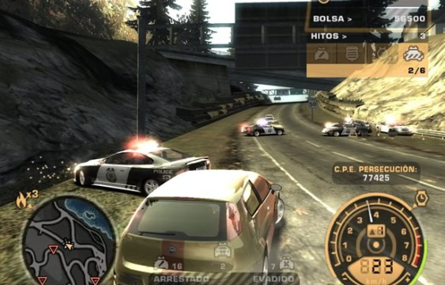
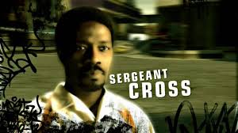

Tijdens het spel moet de speler ook doelstellingen tijdens achtervolgingen realiseren om verder te geraken.
 Een achtervolging begint als men in het zicht komt van de politie of als men er een uitlokt via het menu "Premie" in de "Blacklist 15". In totaal zijn er 7 heatlevels waarvan nummers 1 t/m 5 in de carrière beschikbaar zijn, in het begin is dit 1 en 2, na het verslaan van nummer 13 komt 3, na het verslaan van nummer 9 komt 4 en na het verslaan van nummer 6 komt heat level 5. Nummer 6 is alleen bij de laatste achtervolging in de carrière na de overwinning op Razor, en de 7e is alleen in de challenge serie.
De 7 heatlevels:
Vanaf heatniveu 4 zal de politie een helikopter inzetten om de speler bij te houden. deze volgt de achtervolging vanuit de lucht. Wanneer hij te veel schade oploopt of weinig brandstof meer heeft zal de helikopter wegvliegen. Ook is het mogelijk dat deze op de weg land en een onderdeel vormt van een wegversperring, ook kan de helikopter de speler vanuit de lucht duwen om hem te vertragen. de speler kan de helikopter afschudden door onder een brug door te rijden of door een tunnel te vluchten.
Sergeant Cross: Cross zal de actervolging persoonlijk bijwonen vanaf heatniveau 5. Cross rijdt in een Corvette C6 Z06, die vooral kenmerkgelijk is aan de kleur van de auto. als Cross achter de speler aan zit is zijn stem ook te horen op de politieradio, en hij zal bevelen uitdelen aan zijn mede agenten. het is echter niet gebruikelijk dat Cross de achtervolging bijwoont, hij komt lang niet altijd opdagen maar geeft wel een flinke hoeveelheid premie (100.000) als zijn auto door de speler wordt uitgeschakeld.
Vanaf heat level 5 zal Sergeant Cross ook de achtervolging inzetten. Cross rijdt in een Corvette C6, al ziet deze er anders uit. De politieauto van Sergeant Cross is te onderscheiden aan de kleur zwart, waar de normale federale politieauto wit gekleurd is. Cross blijft achter de speler rijden en geeft aanwijzingen aan de andere agenten, zijn stem is ook te horen op de politieradio. Als de speler hem uitschakelt krijgt hij 100.000 premie. Het is echter niet vanzelfsprekend dat Cross de achtervolging zal bijwonen. Het spawn-gedrag van Cross is aanzienlijk anders van de andere politieauto's, hoewel hij wel onderdeel kan uitmaken van een wegversperring.
 De auto van Sergeant Cross wordt vrijgespeeld als de speler de hoofd verhaallijn afmaakt. De auto zal echter donkergeel zijn in plaats van zwart met wit. De Corvette van Cross heeft slechts één stoel, wat tegenstrijdig is met de Cutscenes tijdens het spel, aangezien de assistente van Cross meerijdt, maar eigenlijk nergens kan zitten.